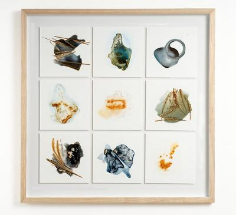

Grove Rake Mine: A Landscape-in-Waiting
“A spring evening. Chilly with dampness in the air yet still a few long shafts of light from the fading sun as I drive down a broad valley past the remains of Grove Rake Mine, the most recently abandoned mine site in the area. I stop to gaze down on the skeletal form of the winding gear, the stark framework monumental in the deserted landscape.
“Driving on and rounding a bend I am brought to an abrupt halt. Suddenly I am much closer to the tower and see everything from a new angle. It no longer appears as some poignant, static relic of a lost way of life. Rather its geometry is broken up in a way that moves my eye from edge to edge, up and down, in a dynamic syncopation which seems to mock my sentimental assumptions.”
JF, Diary entry, 13 May 2008.

Grove Rake No. 1
Mixed Media on Yupo™ mounted and framed. Overall size 75cm x 75cm.
{kind=link}
Grove Rake Mine, along with a number of smaller fluorite mine workings, lies almost at the head of the Rookhope valley in Weardale, Co. Durham. This group of mines (collectively known as Frazer’s Grove) with its long and rich history finally ceased production in December, 1998. What remains is a variety of buildings, including the dramatic winding gear, surrounded by a landscape bearing the marks of generations of extraction activities. The site, in some respects much as it must have been when it closed ten years ago, represents a striking document of mining history
Inevitably over the intervening years, the site has changed. Several buildings remain, including the striking winding gear which is such a feature of the valley. They are of various periods and forms of construction – old stone houses, concrete stores, workshops and offices. Mostly the windows are broken and doors wrenched from their hinges. The weather has taken its toll and no doubt much has been removed by opportunistic pilfering and other more systematic activities, but there is still stuff lying about all over the place. Cupboards on isolated walls have lost their doors, standing open to the elements yet still containing bits of machine parts and electrical circuitry. In former offices old wellington boots, instructions manuals, miscellaneous paperwork and yards of ventilating duct lie in tangled mounds. Outside the ground resembles a disorderly scrap yard, a vast amalgam of diverse materials and substances all busily transforming themselves in a process of gradual renewal. Wood rots, mould grows, paint peels, steel and iron rust, rubber perishes, plastic fades and hardens, aluminium and copper oxidise and mud encroaches everywhere. The remains of the mine and the landscape transform themselves and each other to become one.
So Grove Rake stands as testimony to the comradeship between men and the earth which gives a livelihood to a community and vigour to a landscape. It is a mine with a fascinating history and a dramatic setting. Its powerful character and strong emotional pull give it an air of romance captured in the following quotation: ‘Frazer’s Grove was a diehard soldier of a mine, which alone survived the many vicissitudes of the international fluorspar market, its extraordinary staying power being testament both to its natural riches and the skills and determination of its work force. While it currently seems unlikely that mining will re-commence in the foreseeable future, it must be remembered that Frazer’s Grove has always been a mine of surprises’ (Younger: 2002).
It has recently been suggested (Young: 2008) that the mining complex around Grove Rake could become profitable again because of improvements in hard rock mining technology enabling ore to be got more economically, and the high price of fluorite on the international market, a price which has been sustained even during the current recession.
Jane Foale, March 2008.